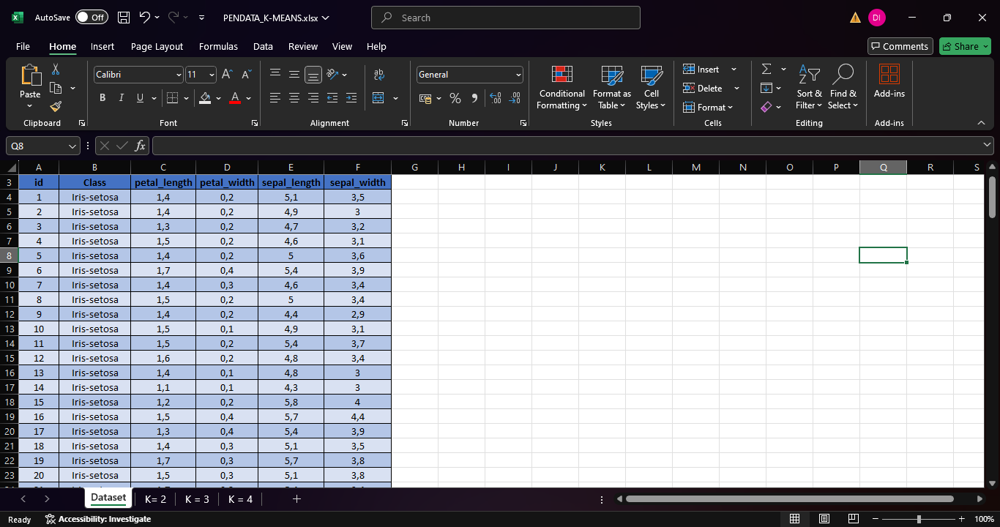
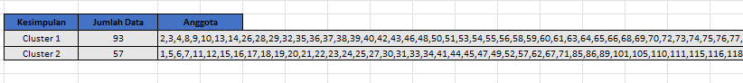

Database Iris
| id | Class | petal_length | petal_width | sepal_length | sepal_width |
|---|---|---|---|---|---|
| 1 | Iris-setosa | 1.4 | 0.2 | 5.1 | 3.5 |
| 2 | Iris-setosa | 1.4 | 0.2 | 4.9 | 3.0 |
| 3 | Iris-setosa | 1.3 | 0.2 | 4.7 | 3.2 |
| 4 | Iris-setosa | 1.5 | 0.2 | 4.6 | 3.1 |
| 5 | Iris-setosa | 1.4 | 0.2 | 5.0 | 3.6 |
| 6 | Iris-setosa | 1.7 | 0.4 | 5.4 | 3.9 |
| 7 | Iris-setosa | 1.4 | 0.3 | 4.6 | 3.4 |
| 8 | Iris-setosa | 1.5 | 0.2 | 5.0 | 3.4 |
| 9 | Iris-setosa | 1.4 | 0.2 | 4.4 | 2.9 |
| 10 | Iris-setosa | 1.5 | 0.1 | 4.9 | 3.1 |
| 11 | Iris-setosa | 1.5 | 0.2 | 5.4 | 3.7 |
| 12 | Iris-setosa | 1.6 | 0.2 | 4.8 | 3.4 |
| 13 | Iris-setosa | 1.4 | 0.1 | 4.8 | 3.0 |
| 14 | Iris-setosa | 1.1 | 0.1 | 4.3 | 3.0 |
| 15 | Iris-setosa | 1.2 | 0.2 | 5.8 | 4.0 |
| 16 | Iris-setosa | 1.5 | 0.4 | 5.7 | 4.4 |
| 17 | Iris-setosa | 1.3 | 0.4 | 5.4 | 3.9 |
| 18 | Iris-setosa | 1.4 | 0.3 | 5.1 | 3.5 |
| 19 | Iris-setosa | 1.7 | 0.3 | 5.7 | 3.8 |
| 20 | Iris-setosa | 1.5 | 0.3 | 5.1 | 3.8 |
| 21 | Iris-setosa | 1.7 | 0.2 | 5.4 | 3.4 |
| 22 | Iris-setosa | 1.5 | 0.4 | 5.1 | 3.7 |
| 23 | Iris-setosa | 1.0 | 0.2 | 4.6 | 3.6 |
| 24 | Iris-setosa | 1.7 | 0.5 | 5.1 | 3.3 |
| 25 | Iris-setosa | 1.9 | 0.2 | 4.8 | 3.4 |
| 26 | Iris-setosa | 1.6 | 0.2 | 5.0 | 3.0 |
| 27 | Iris-setosa | 1.6 | 0.4 | 5.0 | 3.4 |
| 28 | Iris-setosa | 1.5 | 0.2 | 5.2 | 3.5 |
| 29 | Iris-setosa | 1.4 | 0.2 | 5.2 | 3.4 |
| 30 | Iris-setosa | 1.6 | 0.2 | 4.7 | 3.2 |
| 31 | Iris-setosa | 1.6 | 0.2 | 4.8 | 3.1 |
| 32 | Iris-setosa | 1.5 | 0.4 | 5.4 | 3.4 |
| 33 | Iris-setosa | 1.5 | 0.1 | 5.2 | 4.1 |
| 34 | Iris-setosa | 1.4 | 0.2 | 5.5 | 4.2 |
| 35 | Iris-setosa | 1.5 | 0.1 | 4.9 | 3.1 |
| 36 | Iris-setosa | 1.2 | 0.2 | 5.0 | 3.2 |
| 37 | Iris-setosa | 1.3 | 0.2 | 5.5 | 3.5 |
| 38 | Iris-setosa | 1.5 | 0.1 | 4.9 | 3.1 |
| 39 | Iris-setosa | 1.3 | 0.2 | 4.4 | 3.0 |
| 40 | Iris-setosa | 1.5 | 0.2 | 5.1 | 3.4 |
| 41 | Iris-setosa | 1.3 | 0.3 | 5.0 | 3.5 |
| 42 | Iris-setosa | 1.3 | 0.3 | 4.5 | 2.3 |
| 43 | Iris-setosa | 1.3 | 0.2 | 4.4 | 3.2 |
| 44 | Iris-setosa | 1.6 | 0.6 | 5.0 | 3.5 |
| 45 | Iris-setosa | 1.9 | 0.4 | 5.1 | 3.8 |
| 46 | Iris-setosa | 1.4 | 0.3 | 4.8 | 3.0 |
| 47 | Iris-setosa | 1.6 | 0.2 | 5.1 | 3.8 |
| 48 | Iris-setosa | 1.4 | 0.2 | 4.6 | 3.2 |
| 49 | Iris-setosa | 1.5 | 0.2 | 5.3 | 3.7 |
| 50 | Iris-setosa | 1.4 | 0.2 | 5.0 | 3.3 |
| 51 | Iris-versicolor | 4.7 | 1.4 | 7.0 | 3.2 |
| 52 | Iris-versicolor | 4.5 | 1.5 | 6.4 | 3.2 |
| 53 | Iris-versicolor | 4.9 | 1.5 | 6.9 | 3.1 |
| 54 | Iris-versicolor | 4.0 | 1.3 | 5.5 | 2.3 |
| 55 | Iris-versicolor | 4.6 | 1.5 | 6.5 | 2.8 |
| 56 | Iris-versicolor | 4.5 | 1.3 | 5.7 | 2.8 |
| 57 | Iris-versicolor | 4.7 | 1.6 | 6.3 | 3.3 |
| 58 | Iris-versicolor | 3.3 | 1.0 | 4.9 | 2.4 |
| 59 | Iris-versicolor | 4.6 | 1.3 | 6.6 | 2.9 |
| 60 | Iris-versicolor | 3.9 | 1.4 | 5.2 | 2.7 |
| 61 | Iris-versicolor | 3.5 | 1.0 | 5.0 | 2.0 |
| 62 | Iris-versicolor | 4.2 | 1.5 | 5.9 | 3.0 |
| 63 | Iris-versicolor | 4.0 | 1.0 | 6.0 | 2.2 |
| 64 | Iris-versicolor | 4.7 | 1.4 | 6.1 | 2.9 |
| 65 | Iris-versicolor | 3.6 | 1.3 | 5.6 | 2.9 |
| 66 | Iris-versicolor | 4.4 | 1.4 | 6.7 | 3.1 |
| 67 | Iris-versicolor | 4.5 | 1.5 | 5.6 | 3.0 |
| 68 | Iris-versicolor | 4.1 | 1.0 | 5.8 | 2.7 |
| 69 | Iris-versicolor | 4.5 | 1.5 | 6.2 | 2.2 |
| 70 | Iris-versicolor | 3.9 | 1.1 | 5.6 | 2.5 |
| 71 | Iris-versicolor | 4.8 | 1.8 | 5.9 | 3.2 |
| 72 | Iris-versicolor | 4.0 | 1.3 | 6.1 | 2.8 |
| 73 | Iris-versicolor | 4.9 | 1.5 | 6.3 | 2.5 |
| 74 | Iris-versicolor | 4.7 | 1.2 | 6.1 | 2.8 |
| 75 | Iris-versicolor | 4.3 | 1.3 | 6.4 | 2.9 |
| 76 | Iris-versicolor | 4.4 | 1.4 | 6.6 | 3.0 |
| 77 | Iris-versicolor | 4.8 | 1.4 | 6.8 | 2.8 |
| 78 | Iris-versicolor | 5.0 | 1.7 | 6.7 | 3.0 |
| 79 | Iris-versicolor | 4.5 | 1.5 | 6.0 | 2.9 |
| 80 | Iris-versicolor | 3.5 | 1.0 | 5.7 | 2.6 |
| 81 | Iris-versicolor | 3.8 | 1.1 | 5.5 | 2.4 |
| 82 | Iris-versicolor | 3.7 | 1.0 | 5.5 | 2.4 |
| 83 | Iris-versicolor | 3.9 | 1.2 | 5.8 | 2.7 |
| 84 | Iris-versicolor | 5.1 | 1.6 | 6.0 | 2.7 |
| 85 | Iris-versicolor | 4.5 | 1.5 | 5.4 | 3.0 |
| 86 | Iris-versicolor | 4.5 | 1.6 | 6.0 | 3.4 |
| 87 | Iris-versicolor | 4.7 | 1.5 | 6.7 | 3.1 |
| 88 | Iris-versicolor | 4.4 | 1.3 | 6.3 | 2.3 |
| 89 | Iris-versicolor | 4.1 | 1.3 | 5.6 | 3.0 |
| 90 | Iris-versicolor | 4.0 | 1.3 | 5.5 | 2.5 |
| 91 | Iris-versicolor | 4.4 | 1.2 | 5.5 | 2.6 |
| 92 | Iris-versicolor | 4.6 | 1.4 | 6.1 | 3.0 |
| 93 | Iris-versicolor | 4.0 | 1.2 | 5.8 | 2.6 |
| 94 | Iris-versicolor | 3.3 | 1.0 | 5.0 | 2.3 |
| 95 | Iris-versicolor | 4.2 | 1.3 | 5.6 | 2.7 |
| 96 | Iris-versicolor | 4.2 | 1.2 | 5.7 | 3.0 |
| 97 | Iris-versicolor | 4.2 | 1.3 | 5.7 | 2.9 |
| 98 | Iris-versicolor | 4.3 | 1.3 | 6.2 | 2.9 |
| 99 | Iris-versicolor | 3.0 | 1.1 | 5.1 | 2.5 |
| 100 | Iris-versicolor | 4.1 | 1.3 | 5.7 | 2.8 |
| 101 | Iris-virginica | 6.0 | 2.5 | 6.3 | 3.3 |
| 102 | Iris-virginica | 5.1 | 1.9 | 5.8 | 2.7 |
| 103 | Iris-virginica | 5.9 | 2.1 | 7.1 | 3.0 |
| 104 | Iris-virginica | 5.6 | 1.8 | 6.3 | 2.9 |
| 105 | Iris-virginica | 5.8 | 2.2 | 6.5 | 3.0 |
| 106 | Iris-virginica | 6.6 | 2.1 | 7.6 | 3.0 |
| 107 | Iris-virginica | 4.5 | 1.7 | 4.9 | 2.5 |
| 108 | Iris-virginica | 6.3 | 1.8 | 7.3 | 2.9 |
| 109 | Iris-virginica | 5.8 | 1.8 | 6.7 | 2.5 |
| 110 | Iris-virginica | 6.1 | 2.5 | 7.2 | 3.6 |
| 111 | Iris-virginica | 5.1 | 2.0 | 6.5 | 3.2 |
| 112 | Iris-virginica | 5.3 | 1.9 | 6.4 | 2.7 |
| 113 | Iris-virginica | 5.5 | 2.1 | 6.8 | 3.0 |
| 114 | Iris-virginica | 5.0 | 2.0 | 5.7 | 2.5 |
| 115 | Iris-virginica | 5.1 | 2.4 | 5.8 | 2.8 |
| 116 | Iris-virginica | 5.3 | 2.3 | 6.4 | 3.2 |
| 117 | Iris-virginica | 5.5 | 1.8 | 6.5 | 3.0 |
| 118 | Iris-virginica | 6.7 | 2.2 | 7.7 | 3.8 |
| 119 | Iris-virginica | 6.9 | 2.3 | 7.7 | 2.6 |
| 120 | Iris-virginica | 5.0 | 1.5 | 6.0 | 2.2 |
| 121 | Iris-virginica | 5.7 | 2.3 | 6.9 | 3.2 |
| 122 | Iris-virginica | 4.9 | 2.0 | 5.6 | 2.8 |
| 123 | Iris-virginica | 6.7 | 2.0 | 7.7 | 2.8 |
| 124 | Iris-virginica | 4.9 | 1.8 | 6.3 | 2.7 |
| 125 | Iris-virginica | 5.7 | 2.1 | 6.7 | 3.3 |
| 126 | Iris-virginica | 6.0 | 1.8 | 7.2 | 3.2 |
| 127 | Iris-virginica | 4.8 | 1.8 | 6.2 | 2.8 |
| 128 | Iris-virginica | 4.9 | 1.8 | 6.1 | 3.0 |
| 129 | Iris-virginica | 5.6 | 2.1 | 6.4 | 2.8 |
| 130 | Iris-virginica | 5.8 | 1.6 | 7.2 | 3.0 |
| 131 | Iris-virginica | 6.1 | 1.9 | 7.4 | 2.8 |
| 132 | Iris-virginica | 6.4 | 2.0 | 7.9 | 3.8 |
| 133 | Iris-virginica | 5.6 | 2.2 | 6.4 | 2.8 |
| 134 | Iris-virginica | 5.1 | 1.5 | 6.3 | 2.8 |
| 135 | Iris-virginica | 5.6 | 1.4 | 6.1 | 2.6 |
| 136 | Iris-virginica | 6.1 | 2.3 | 7.7 | 3.0 |
| 137 | Iris-virginica | 5.6 | 2.4 | 6.3 | 3.4 |
| 138 | Iris-virginica | 5.5 | 1.8 | 6.4 | 3.1 |
| 139 | Iris-virginica | 4.8 | 1.8 | 6.0 | 3.0 |
| 140 | Iris-virginica | 5.4 | 2.1 | 6.9 | 3.1 |
| 141 | Iris-virginica | 5.6 | 2.4 | 6.7 | 3.1 |
| 142 | Iris-virginica | 5.1 | 2.3 | 6.9 | 3.1 |
| 143 | Iris-virginica | 5.1 | 1.9 | 5.8 | 2.7 |
| 144 | Iris-virginica | 5.9 | 2.3 | 6.8 | 3.2 |
| 145 | Iris-virginica | 5.7 | 2.5 | 6.7 | 3.3 |
| 146 | Iris-virginica | 5.2 | 2.3 | 6.7 | 3.0 |
| 147 | Iris-virginica | 5.0 | 1.9 | 6.3 | 2.5 |
| 148 | Iris-virginica | 5.2 | 2.0 | 6.5 | 3.0 |
| 149 | Iris-virginica | 5.4 | 2.3 | 6.2 | 3.4 |
| 150 | Iris-virginica | 5.1 | 1.8 | 5.9 | 3.0 |
K-Means Clustering
Pengertian :
Teknik pengelompokan (clustering) berbasis partisi atau Membagi data menjadi K kelompok berdasarkan jarak dan Setiap kelompok direpresentasikan oleh centroid (rata-rata dari titik dalam kluster)
Tujuan :
Mengelompokkan objek sehingga :
Objek dalam kluster sehomogen mungkin
Objek antar kluster seheterogen mungkin
Meminimalkan variasi dalam kluster (within-cluster variance)
Kelebihan dan Kekurangan :
Kelebihan :
cepat dan efisien, lebih mudah dipahami, hasil stabil jika inisialisasi bagus
Kekurangan :
Sensitif terhadap Outlier, harus menentukan K dari awal, dipengaruhi oleh skala dan dimensi data
Langkah Langkah Pengerjaan
1. Siapkan Database

2. Pilih data yang ingin dijadikan Centroid
disini saya pakai id 10 dan 12
3. Tentukan nilai K
untuk contoh kasus ini saya menggunakan K = 2
4. Selanjutnya lakukan perhitungan pada Cluster (C1 & C2) menggunakan Euclidean Distance
lakukan perhitungan untuk menentukan jarak antar data pada Cluster
5. Hitung jarak minimum antara Cluster
hitung dengan rumus (c1 - c2)
6. Kemudian kategorikan data berdasarkan nilai jarak minimum data tersebut
disini saya mengkategorikan ke dalam 2 Kluster yaitu Cluster 1 dan Cluster 2
7. Buat tabel kesimpulan yang didalmnya berisi Jumlah data dan anggota berdasarkan Cluster

8. Lakukan hingga Iterasi ke 2
9. Hitung SSE (Sum Square Error)
10. Tentukan kembali nilai Centroid terbaru
11. Hitung Shiloutte
a(i) = rata-rata jarak dari titik i ke semua titik dalam cluster-nya sendiri
b(i) = rata-rata jarak dari titik i ke titik-titik dalam cluster terdekat lainnya
Nilai s(i) berkisar antara -1 sampai 1
Langkah Langkah :
1. Hitung jarak euclidean antar data
2. Hitung a(i): Rata-rata jarak ke data dalam cluster yang sama
3. Hitung b(i): Rata-rata jarak ke cluster terdekat lain
4. Hitung s(i): Rumus Silhouette yaitu =(b - a) / MAX(a, b)
5. Rata-Ratakan Semua s(i) (=AVERAGE(range_silhouette))
12. Hasil Shiloutte
13. Ulangi proses Iterasi hingga hasil tetap (tidak berubah) atau Konvergensi tercapai
ulangi terus menerus hingga data pada tabel kesimpulan hasilnya sama, disini saya hanya sampai pada Iterasi ke 7 karena telah diperoleh konvergennya
14. Hitung Menggunakan Code
dengan menggunakan library sklearn dan matplotlib untuk menggambarkan plot diagramnya
import pandas as pd
from sklearn.cluster import KMeans
from sklearn.metrics import silhouette_score
import matplotlib.pyplot as plt
#, jd .
df = pd.read_csv('PENDATA_K-MEANS.csv', delimiter=';')
df = df.drop(columns=['Unnamed: 6', 'Unnamed: 7', 'Unnamed: 8'])
for col in ['petal_length', 'petal_width', 'sepal_length', 'sepal_width']:
df[col] = df[col].str.replace(',', '.').astype(float)
X = df[['petal_length', 'petal_width', 'sepal_length', 'sepal_width']].values
# Jalankan KMeans dengan 2 cluster
kmeans = KMeans(n_clusters=2, random_state=42)
kmeans.fit(X)
labels = kmeans.labels_
# Hitung SSE dan Silhouette Score
sse = kmeans.inertia_
silhouette = silhouette_score(X, labels)
print("SSE:", sse)
print("Silhouette Score:", silhouette)
# Visualisasi hasil cluster (gunakan 2 fitur: petal_length dan petal_width)
plt.figure(figsize=(8, 6))
plt.scatter(X[:, 0], X[:, 1], c=labels, cmap='viridis', s=50)
plt.scatter(kmeans.cluster_centers_[:, 0], kmeans.cluster_centers_[:, 1],
s=100, c='green', marker='X', label='Centroids')
plt.xlabel('Petal Length')
plt.ylabel('Petal Width')
plt.title('Hasil K-Means Clustering (2 Cluster)')
plt.legend()
plt.grid(True)
plt.tight_layout()
plt.show()
15. Hasil perhitungan dengan Code :
Fuzzy K-Means
Pengertian :
adalah salah satu teknik pengelompokan yang termasuk dalam kelompok metode Hard K-Means, FCM menggunakan pendekatan pengelompokan fuzzy, memungkinkan data menjadi anggota dari seluruh kelas atau cluster yang terbentuk dengan derajat keanggotaan berkisar antara 0 hingga 1, Tingkat keanggotaan ini menentukan sejauh mana data hadir dalam suatu kelas atau cluster
Tujuan :
Mengelompokkan data ke dalam beberapa cluster dengan derajat keanggotaan, bukan klasifikasi mutlak atau (soft clustering)
Kelebihan dan Kekurangan :
Kelebihan :
Data bisa menjadi anggota beberapa cluster sekaligus (Soft Clustering), hasil stabil jika inisialisasi bagus
Kekurangan :
Sensitif terhadap Outlier, harus menentukan Cluster dari awal, dipengaruhi oleh skala dan dimensi data